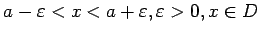
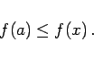

Inhalt Index DeskTop Bronstein

 Funktionen und ihre Darstellung Funktionsbegriff Einige Funktionstypen
Funktionen und ihre Darstellung Funktionsbegriff Einige Funktionstypen


Die Funktion f(x) mit dem Definitionsbereich D hat an der Stelle a ein absolutes oder globales Maximum, wenn für alle  gilt:
gilt:
Die Funktion f(x) hat an der Stelle a ein relatives oder lokales Maximum, wenn die Ungleichung (2.8a) nur in einer Umgebung von a gilt, d.h. für alle x mit .
Die Definition für ein absolutes oder globales Minimum sowie für ein relatives oder lokales Minimum lauten analog, es ist nur die Ungleichung (2.8a) zu ersetzen durch
|  | (2.8b) |
Hinweise: